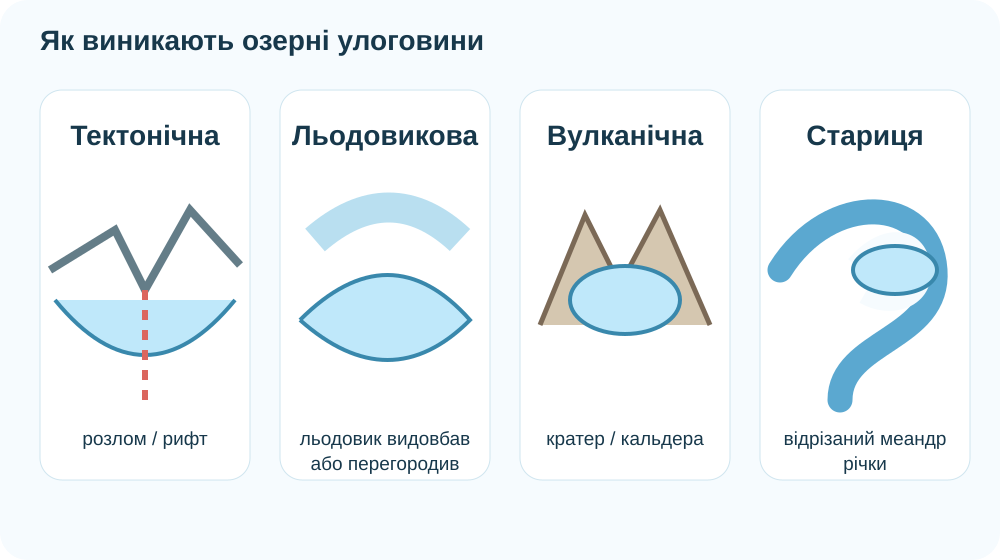
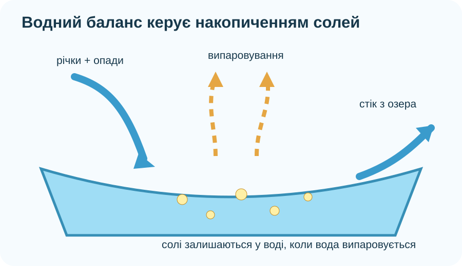

Що має залишитися після уроку?
01
Практична робота: нанесіть озера на карту
Оберіть об’єкт і клацніть на карті там, де він розташований. Після трьох точок зафіксуйте закономірність: усі озера різні за розміром і походженням, але всі є частинами вод суходолу.
Джерельний факт. Шацький НПП охоплює 23 озера; Світязь — найбільше озеро парку і найглибше озеро України. Байкал — найглибше озеро світу та містить близько 20% світового запасу незамерзлої прісної води.
Улоговина — це «історія» озера, записана в рельєфі

Зіставте доказ і походження
Чому одне озеро прісне, а інше солоне?
Модель водного балансу

Доказове питання
Два озера отримують розчинені солі з річковим стоком. Озеро А має постійний витік, озеро Б — безстічне й лежить у сухому кліматі. У якому з них за інших однакових умов солі накопичуватимуться швидше?
Три озерні світи


Болото — не «зіпсоване озеро»
Зберіть умови заболочування
Оберіть чинники, що можуть сприяти заболочуванню.
Черемське болото — українська Ramsar-територія з болотними лісами, сфагново-осоковими угрупованнями та льодовиково-карстовими озерами; воно важливе для регулювання водного режиму, живлення підземних вод і стримування паводків.

Як розпізнати ризик і не перевіряти болото «на міцність»
Завдання КТП — не навчити ходити через болото, а навчити вчасно відмовитися від небезпечного маршруту. Оцініть сценарії.
Пам’ятка учня
- Не заходьте на невідому заболочену ділянку без облаштованого маршруту й дорослого супроводу.
- Не перевіряйте нестійку поверхню стрибками, ногою або палицею «для цікавості».
- Не сходьте з настилів, екостежок і позначених маршрутів.
- Побачили підтоплення, хитку рослинну «ковдру», відкриту воду між купинами — обирайте інший шлях.
- У небезпечній ситуації кличте на допомогу й звертайтеся до рятувальних служб; не ризикуйте, намагаючись самостійно перейти невідому ділянку.
Байкал як геологічна й біологічна лабораторія
Під час перегляду
Запишіть три різні докази у форматі:
- геологічний — про вік/глибину;
- гідрологічний — про воду;
- біологічний — про унікальні види.
Систематизуємо висновки
Озеро
Природна водойма в замкненому заглибленні суходолу, не пов’язана безпосередньо з океаном.
Озерна улоговина
Заглиблення, у якому міститься озеро. Її походження може бути тектонічним, льодовиковим, вулканічним, річковим, карстовим тощо.
Солоність
Вміст розчинених солей у воді. На накопичення солей впливають надходження, випаровування і наявність стоку.
Болото
Надмірно зволожена ділянка з характерною рослинністю та процесами накопичення органічної речовини; важлива частина водно-болотних екосистем.
Чому не можна визначити властивості озера лише за його розміром?
§43 + завершити практичний продукт
- Опрацюйте §43.
- На контурній карті підпишіть Шацькі озера, Каспійське море та Байкал.
- Для одного озера складіть «паспорт»: положення → походження улоговини → стік/безстічність → прісне/солоне → один доказ.
- Перепишіть пам’ятку безпеки у 5 коротких правил.